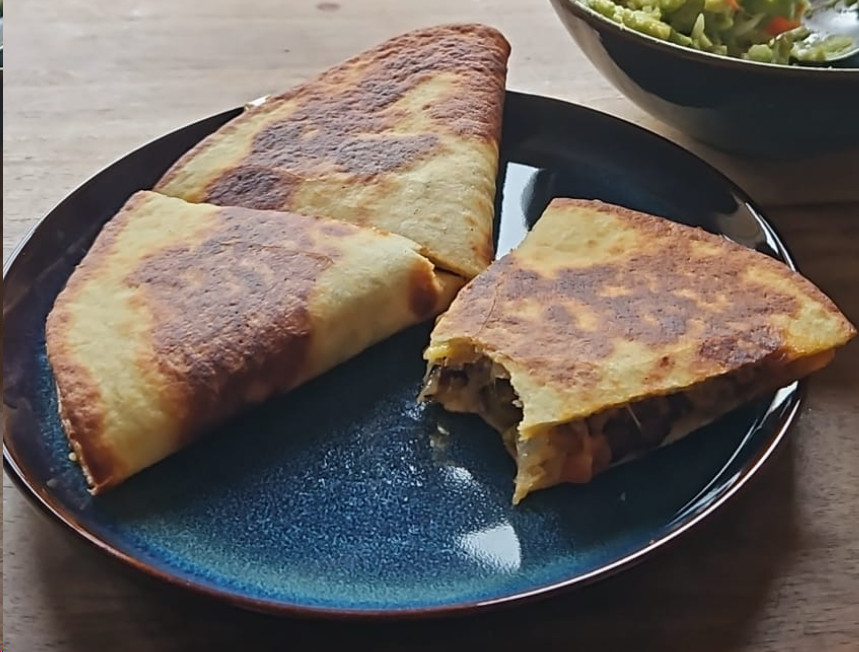

Quesadilla

Beschreibung
Leckeres Rezept, aber mindestens die beschriebene Menge machen, weil es etwas aufwendiger ist und gut aufgewärmt werden kann.
Zutaten
Anleitung
- Zwiebel, Knoblauch und Paprika schneiden und kurz anbraten.
Gemüse an Pfannenrand schieben und Fleisch anbraten.
Zuletzt Kidney-Bohnen hinzugeben und alles mit Gewürzen würzen.
Alles aus Pfanne nehmen und beiseite stellen. - Tortilla auf einer Seite leicht mit Butter bestreichen und in gleiche Pfanne (mittlere Hitze) mit Butterseite nach unten legen.
- Käse auf gesamter Tortilla in Pfanne verteilen.
Füllung nur auf einer Hälfte der Tortilla verteilen. - Warten bis der Käse geschmolzen ist und dann die reine Käse-Seite
auf die Füllung-Seite umklappen.
Anschließend aus Pfanne nehmen und in drei Dreiecke schneiden.
Mit Dip servieren.